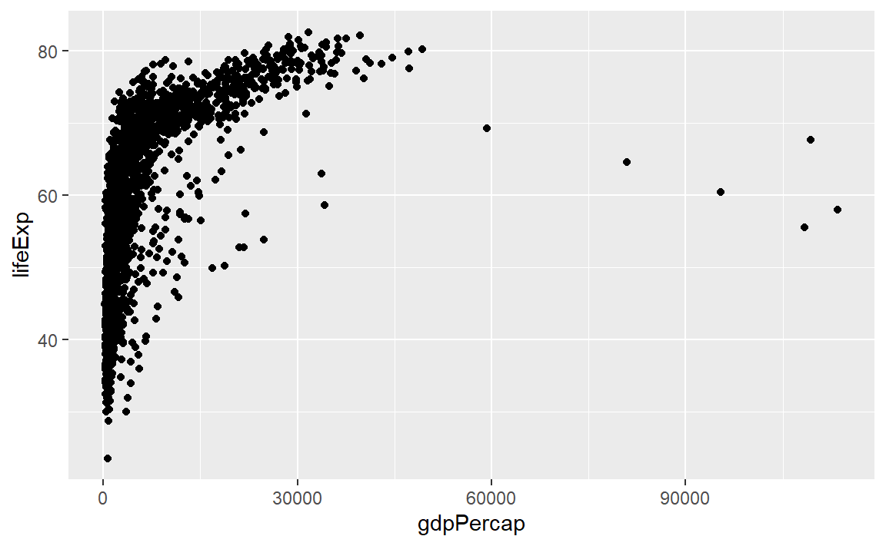
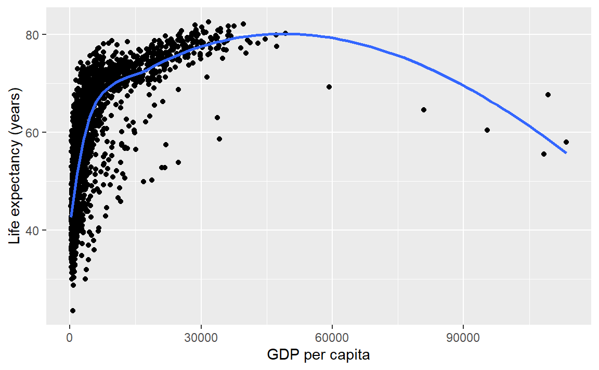
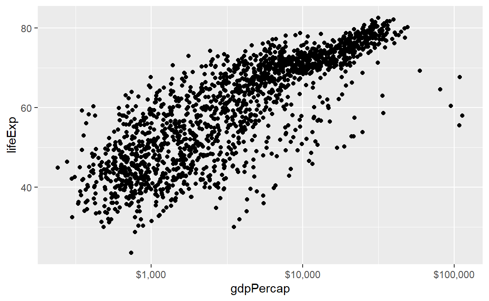
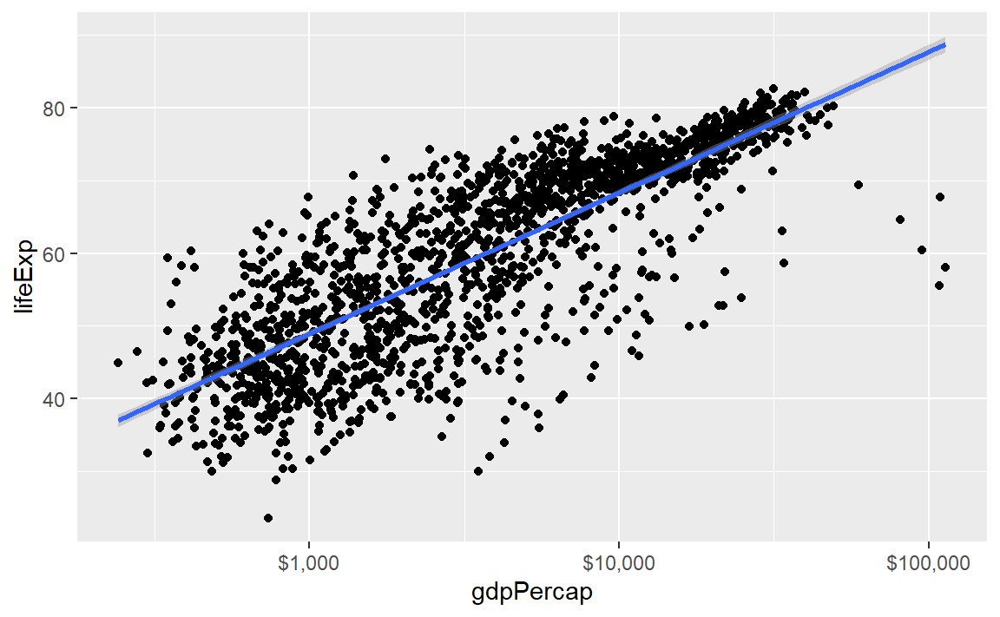
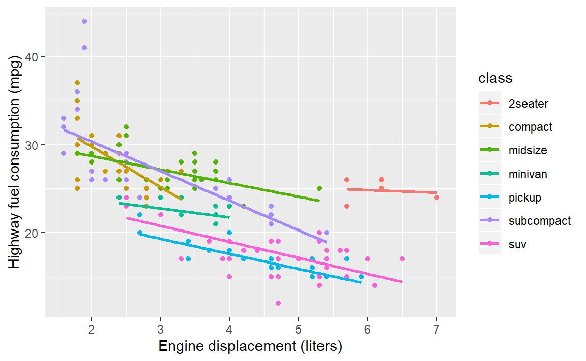
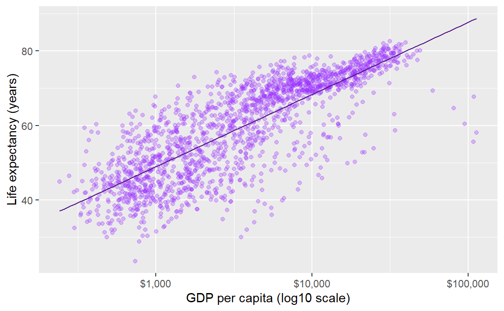
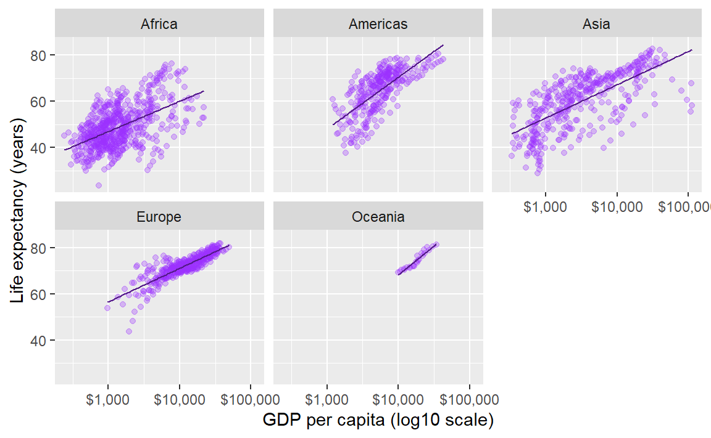
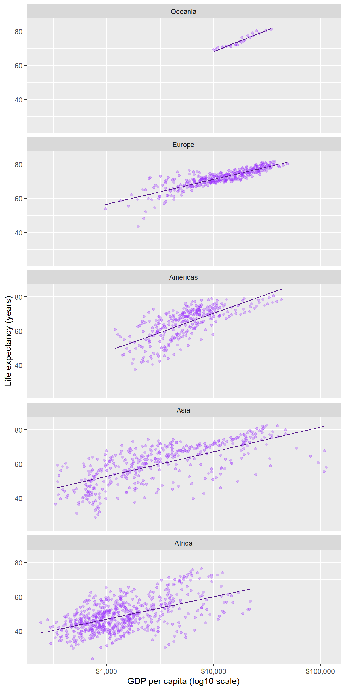
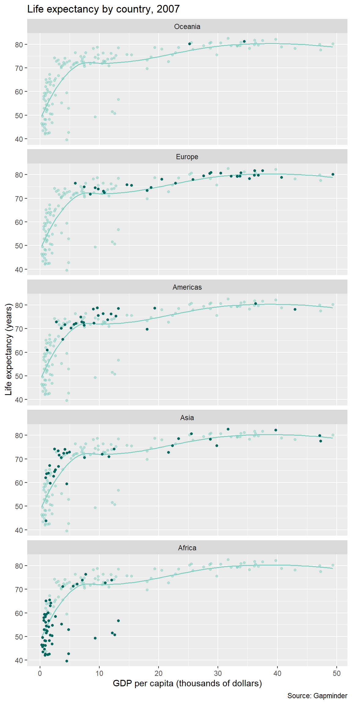
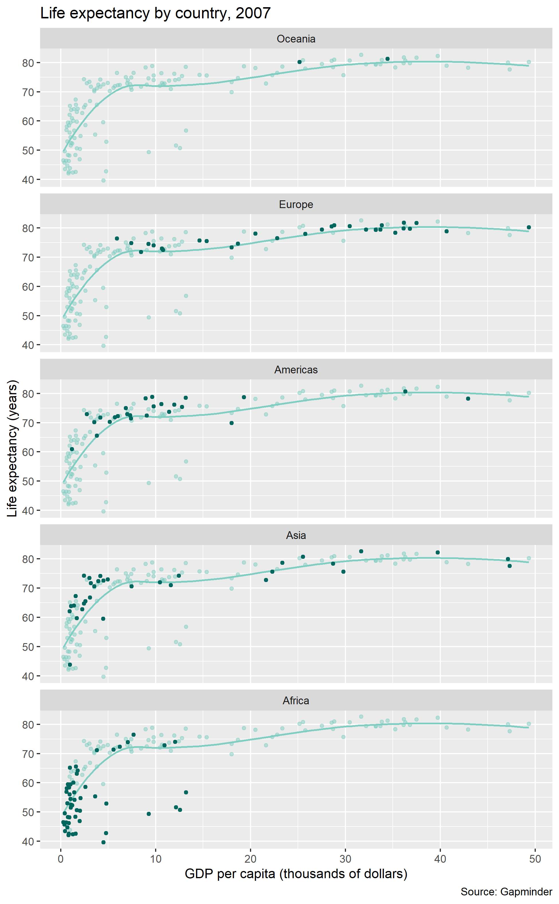

6 Graph basics

Decline by Randall Munroe (xkcd.com) is licensed under CC BY-NC 2.5
This tutorial is an introduction to ggplot2 adapted from Chapter 3 from (Healy, 2019b). If you already have R experience, you might still want to browse this section in case you find something new.
If the prerequisites have been met, the tutorial should take no longer than 50 minutes.
6.1 Prerequisites
Every tutorial assumes that
- You completed the Getting started instructions
- You launched
midfield_institute.Rprojto start the R session
Use File > New File > R Script to create a new R script
- Name the script
02-graph-basics.R
- Save it in the
scriptsdirectory - Add a minimal header at the top of the script (if you wish)
- Use
library()to load the packages we will use
# workshop graph basics
# name
# date
library("tidyverse")
library("gapminder")Run the script by clicking the Source button. If you see an error like this one,
Error in library("pkg_name") : there is no package called 'pkg_name'then you should install the missing package(s) and run the script again.
[To review how to install an R package]
Guidelines
- As you work through the tutorial, type a line or chunk of code then File > Save and Source.
- Confirm that your result matches the tutorial result.
- Your turn exercises give you chance to devise your own examples and check them out. You learn by doing (but you knew that already)!
6.2 Tidy data
If the data set is “tidy”, then every row is an observation and every column is a variable. The gapminder data frame is tidy. We use glimpse() to get a look at the structure.
glimpse(gapminder)
#> Observations: 1,704
#> Variables: 6
#> $ country <fct> Afghanistan, Afghanistan, Afghanistan, Afghanistan, ...
#> $ continent <fct> Asia, Asia, Asia, Asia, Asia, Asia, Asia, Asia, Asia...
#> $ year <int> 1952, 1957, 1962, 1967, 1972, 1977, 1982, 1987, 1992...
#> $ lifeExp <dbl> 28.801, 30.332, 31.997, 34.020, 36.088, 38.438, 39.8...
#> $ pop <int> 8425333, 9240934, 10267083, 11537966, 13079460, 1488...
#> $ gdpPercap <dbl> 779.4453, 820.8530, 853.1007, 836.1971, 739.9811, 78...And we can just type its name to see the first few rows,
gapminder
#> # A tibble: 1,704 x 6
#> country continent year lifeExp pop gdpPercap
#> <fct> <fct> <int> <dbl> <int> <dbl>
#> 1 Afghanistan Asia 1952 28.8 8425333 779.
#> 2 Afghanistan Asia 1957 30.3 9240934 821.
#> 3 Afghanistan Asia 1962 32.0 10267083 853.
#> 4 Afghanistan Asia 1967 34.0 11537966 836.
#> 5 Afghanistan Asia 1972 36.1 13079460 740.
#> 6 Afghanistan Asia 1977 38.4 14880372 786.
#> 7 Afghanistan Asia 1982 39.9 12881816 978.
#> 8 Afghanistan Asia 1987 40.8 13867957 852.
#> 9 Afghanistan Asia 1992 41.7 16317921 649.
#> 10 Afghanistan Asia 1997 41.8 22227415 635.
#> # ... with 1,694 more rowsRead more about tidy data in (Wickham and Grolemund, 2017).
Your turn. The ggplot2 package includes a dataset called
mpg.
- Use
glimpse()to examine the data set.- How many variables? How many observations?
- How many of the variables are numeric? How many are character type?
- Is the data set tidy?
Check your work. There are 234 observations and 11 variables.
6.3 Anatomy of a graph
ggplot() is a our basic plotting function. The data = ... argument assigns the data frame.
p <- ggplot(data = gapminder)Next we use the mapping argument mapping = aes(...) to assign variables (column names) from the data frame to specific aesthetic properties of the graph such as the x-coordinate, the y-coordinate color, fill, etc.
Here we will map the GDP per capita variable to x and the life expectancy variable to y.
p <- ggplot(data = gapminder, mapping = aes(x = gdpPercap, y = lifeExp))If we try to print the graph by typing the name of the graph object (everything in R is an object), we get an empty graph because we haven’t told ggplot what sort of a graph we want.
p
Because the graph will be a scatterplot, we add the geom_point() layer.
p <- p +geom_point()
p # display the graph
In ggplot2, “geoms” are geometric objects such as points, lines, bars, boxplots, contours, polygons, etc. You can browse the full list on the ggplot2 geom reference page.
We could also have simply added the layer to the original object,
p <- ggplot(data = gapminder, mapping = aes(x = gdpPercap, y = lifeExp)) +
geom_point()
p # display the graph
Notice that the default axis labels are the variables names from the data frame. We can edit those with another layer
p <- p + labs(x = "GDP per capita", y = "Life expectancy (years)")
p # display the graph
Or, with all layers shown in one code chunk,
p <- ggplot(data = gapminder, mapping = aes(x = gdpPercap, y = lifeExp)) +
geom_point() +
labs(x = "GDP per capita", y = "Life expectancy (years)")
p # display the graph
Summary. The basics steps for building up the layers of any graph consist of,
- assign the data frame
- map variables (columns names) to aesthetic properties
- choose geoms
- adjust scales, labels, etc.
For more information
- aes() help page
- geom_point() help page
- geom_labs() help page
Your turn.
- In the console, type
? mpgto see the data set help page. Skim the descriptions of the variables.
- Create a scatterplot of highway miles per gallon as a function of engine displacement in liters.
Check your work:

6.4 Layer: smooth fit
Suppose you wanted a smooth fit curve, not necessarily linear. Add a geom_smooth() layer. The name loess (pronounced like the proper name Lois) is a nonparametric curve-fitting method based on local regression.
p <- p + geom_smooth(method = "loess", se = FALSE)
p # display the graph
The se argument controls whether or not the confidence interval is displayed. Setting se = TRUE yields,
p <- p + geom_smooth(method = "loess", se = TRUE)
p # display the graphFor a linear-fit layer, we add a layer with method set to lm (short for linear model). The linear fit is not particularly good in this case, but now you know how to do one.
p <- p + geom_smooth(method = "lm", se = TRUE)
p # display the graphFor more information
- geom_smooth() help page
Your turn. Continue to practice with
mpg.
- Add a loess curve fit with a confidence interval.
Check your work:

6.5 Layer: log scale
We have orders of magnitude differences in the GDP per capita variable. To confirm, we can create a summary() of the gdpPercap variable. The output shows that the minimum is 241, the median 3532, and the maximum 113523.
# extract one variable from the data frame
this_variable <- gapminder["gdpPercap"]
# statistical summary of one variable
summary(this_variable)
#> gdpPercap
#> Min. : 241.2
#> 1st Qu.: 1202.1
#> Median : 3531.8
#> Mean : 7215.3
#> 3rd Qu.: 9325.5
#> Max. :113523.1The bracket notation I just used, gapminder["gdpPercap"], is one way to extract a variable from a data frame.
In exploring a graph like this, it might be useful to add a layer that changes the horizontal scale to a log-base-10 scale.
p <- ggplot(data = gapminder, mapping = aes(x = gdpPercap, y = lifeExp)) +
geom_point() +
scale_x_log10()
p # display the graphThe scales package allows us to change the GDP scale to dollars. Using the syntax thepackage::thefunction we can use the scales::dollar function without loading the scales package.
p <- ggplot(data = gapminder, mapping = aes(x = gdpPercap, y = lifeExp)) +
geom_point() +
scale_x_log10(labels = scales::dollar)
p # display the graph
In this case, a linear fit might work,
p <- p + geom_smooth(method = "lm", se = TRUE)
p # display the graph
Update the axis labels,
p <- p + labs(x = "GDP per capita (log10 scale)", y = "Life expectancy (years)")
p # display the graphIn summary, all the layers could have been be coded at once, for example,
p <- ggplot(data = gapminder, mapping = aes(x = gdpPercap, y = lifeExp)) +
geom_point() +
geom_smooth(method = "lm", se = TRUE) +
scale_x_log10(labels = scales::dollar) +
labs(x = "GDP per capita (log10 scale)", y = "Life expectancy (years)")With all the layers in one place, we can see that we’ve coded all the basic steps, that is,
- assign the data frame
- map variables (columns names) to aesthetic properties
- choose geoms
- adjust scales, labels, etc.
For more information
- scale_x_log10() help page
Your turn. Continue to practice with
mpg.
- Edit the axis labels to include units.
Check your work:
6.6 Mapping aesthetics
So far, we have mapped variables only to the x-coordinate and y-coordinate aesthetics.
If we map a variable to the color aesthetic, the data symbols are automatically assigned different colors and a legend is created. In this example, we map the continent variable to color.
p <- ggplot(data = gapminder,
mapping = aes(x = gdpPercap, y = lifeExp, color = continent)) +
geom_point() +
scale_x_log10(labels = scales::dollar) +
labs(x = "GDP per capita", y = "Life expectancy (years)")
p # print the graphYour turn. Continue to practice with
mpg.
- Map vehicle class to color
- Change the curve fit to linear
Check your work:

6.7 Setting properties
Because the colors overprint, we might try making the data symbols slightly transparent. In this case, we are not mapping a property to a variable; instead, we want all data symbols to be less opaque.
The alpha argument, with \(0 \leq \alpha \leq 1\), sets the transparency level. Because this change applies to all data points equally, we assign it in the geom, not aes().
p <- ggplot(data = gapminder,
mapping = aes(x = gdpPercap, y = lifeExp, color = continent)) +
geom_point(alpha = 0.3) +
scale_x_log10(labels = scales::dollar) +
labs(x = "GDP per capita", y = "Life expectancy (years)")
p # print the graphIf we add a linear fit to these data, a fit for each continent is generated. For a thinner line, I’ve added a size argument to the geom.
p <- p + geom_smooth(method = "lm", se = FALSE, size = 0.5)
p # print the graphIf we want all the data markers the same color but we want to change the color, we don’t map it, we set it in the geom.
Here, I’ve omitted the aesthetic mapping to color and used a color assignment in the geom.
p <- ggplot(data = gapminder, mapping = aes(x = gdpPercap, y = lifeExp)) +
geom_point(alpha = 0.3, color = "purple1") +
geom_smooth(method = "lm", se = FALSE, size = 0.5, color = "purple4") +
scale_x_log10(labels = scales::dollar) +
labs(x = "GDP per capita (log10 scale)", y = "Life expectancy (years)")
p # print the graph
For more information
6.8 Layer: facets
In the earlier graph where we mapped continent to color, there was a lot of overprinting, making it difficult to compare the continents.
The facet_wrap() layer separates the data into different panels (or facets). Like the aes() mapping, facet_wrap() is applied to a variable (column name) in the data frame.
p <- p + facet_wrap(facets = vars(continent))
p # print the graph
Comparisons are facilitated by having the facets appear in one column, by using the ncols argument of facet_wrap().
p <- p + facet_wrap(facets = vars(continent), ncol = 1)
p # print the graphIn a faceted display, all panels have identical scales (the default) to facilitate comparison.
Again, all the layers could have been be coded at once, for example,
ggplot(data = gapminder, mapping = aes(x = gdpPercap, y = lifeExp)) +
geom_point(alpha = 0.3, color = "purple1") +
geom_smooth(method = "lm", se = FALSE, size = 0.5, color = "purple4") +
facet_wrap(facets = vars(continent), ncol = 1) +
scale_x_log10(labels = scales::dollar) +
labs(x = "GDP per capita (log10 scale)", y = "Life expectancy (years)") For more information
- facet_wrap() help page
Your turn. Continue to practice with
mpg.
- Map drive type to color
- Facet on vehicle class
- Add some transparency to the data symbols
- Omit the smooth fit
Check your work:
6.9 Ordering the panels
The default ordering of the panels in this example is alphabetical. In most cases, ordering the panels by the data (often the mean or the median) improves the display.
Here we have two quantitative variables, but the one that is the more interesting is life expectancy. Our goal then is to order the continent variable by the median of the lifeExp variable in each panel.
To do that, we require continent to be a factor, a type of variable specialized for creating ordered levels of a category. Using glimpse() we see that continent is already a factor (<fct>).
glimpse(gapminder)
#> Observations: 1,704
#> Variables: 6
#> $ country <fct> Afghanistan, Afghanistan, Afghanistan, Afghanistan, ...
#> $ continent <fct> Asia, Asia, Asia, Asia, Asia, Asia, Asia, Asia, Asia...
#> $ year <int> 1952, 1957, 1962, 1967, 1972, 1977, 1982, 1987, 1992...
#> $ lifeExp <dbl> 28.801, 30.332, 31.997, 34.020, 36.088, 38.438, 39.8...
#> $ pop <int> 8425333, 9240934, 10267083, 11537966, 13079460, 1488...
#> $ gdpPercap <dbl> 779.4453, 820.8530, 853.1007, 836.1971, 739.9811, 78...Therefore all we have to do is tell R that we want the levels of continent ordered by the median of life expectancy using the fct_reorder() function.
gapminder <- gapminder %>%
mutate(continent = fct_reorder(continent, lifeExp, median))In doing so, I’ve overwritten the original gapminder dataset with my revised version.
We set the as.table argument to false to place the panel with the highest life expectancy in the top position.
ggplot(data = gapminder, mapping = aes(x = gdpPercap, y = lifeExp)) +
geom_point(alpha = 0.3, color = "purple1") +
geom_smooth(method = "lm", se = FALSE, size = 0.5, color = "purple4") +
facet_wrap(facets = vars(continent), ncol = 1, as.table = FALSE) +
scale_x_log10(labels = scales::dollar) +
labs(x = "GDP per capita (log10 scale)", y = "Life expectancy (years)") 
For more information
- mutate() help page
- fct_reorder() help page
Your turn. Continue to practice with
mpg.
- Convert
classto a factor ordered by the mean highway mileage- Same graph as before, but order the panels by mean fuel consumption
Check your work:

6.10 Beyond the basics
Demonstrating how the basics can be built upon to create a complex data graphic.
To wrap up this introduction, I’ll show you how we can use functions in various layers to show all the data in every panel; add a common overall loess smooth fit; and highlight the the continent data in each panel, making it easier to compare each continent to the global data.
Because life expectancy has generally increased over time, I’m going to restrict this final graph to 2007, the most recent year in this dataset.
Typing this code in your script is optional. Without further explanation, here’s the code.
gapminder <- gapminder %>%
filter(year == 2007)
ggplot(data = gapminder, mapping = aes(x = gdpPercap / 1000, y = lifeExp)) +
geom_point(data = select(gapminder, -continent),
size = 1.25,
alpha = 0.5,
color = "#80cdc1") +
geom_smooth(data = select(gapminder, -continent),
method = "loess",
se = FALSE,
size = 0.7,
color = "#80cdc1") +
geom_point(mapping = aes(color = continent),
size = 1.25,
color = "#01665e") +
facet_wrap(vars(continent),
ncol = 1,
as.table = FALSE) +
labs(x = "GDP per capita (thousands of dollars)",
y = "Life expectancy (years)",
title = "Life expectancy by country, 2007",
caption = "Source: Gapminder") +
theme(legend.position = "none")
For more information
- select() help page
- filter() help page
- theme() help page
- ColorBrewer for color hex codes
6.11 Resize and write to file
For consistent control over the size and aspect ratio of your publication-ready graph, you should always conclude your design by saving the image and sizing it at the same time.
Here, we save the figure to the figures directory we set up earlier.
ggsave(filename = "figures/02-graph-basics-gapminder.png",
width = 6.5,
height = 10.5,
units = "in",
dpi = 300)And the final figure looks like this:
For more information
- ggsave() help page
Your turn. Continue to practice with
mpg.
- Write your ggsave() code chunk immediately following the ggplot() code chunk of the graph you want to save.
- Use ggsave to write your graph to the
figuresdirectory with the name02-graph-basics-mpg.png- Try a 6 in by 6 in figure size
Check your work: Navigate to your
figuresfolder. The new png file should be there. Open it to confirm it is the figure you expect.
Feel free to take a break before starting the next tutorial.